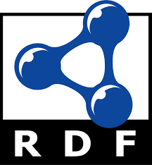
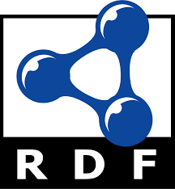

SOCOM Tutorial Slides - LDflex
LDflex Tutorial
- First part: Introduction to LDflex
- Second part: Hands-on
- 1. LDflex playground
- 2. LDflex via React Components
What is LDflex?
- A JavaScript-like domain-specific language for simple Linked Data querying using path-based expressions
-
 

Traverse Linked Data as JS objects
[https://julianrojas.org/#me].name // "Julián Rojas"
Traverse Linked Data as JS objects
[https://julianrojas.org/#me].name // "Julián Rojas"
[https://julianrojas.org/#me].friends.name // ["Ruben Verborgh", "Ruben Taelman", ...]
JSON-LD contexts for semantics
-
JSON-LD contexts provide unambiguous semantics to access data. For example this:
{
"@context": {
"foaf": "http://xmlns.com/foaf/0.1/",
"name": "foaf:name",
"friends": "foaf:knows",
...
}
}
-
Allows this:
[something].name === [something][http://xmlns.com/foaf/0.1/name]
Transparent data access
JavaScript Proxies enable LDflex processors to translate path expressions to SPARQL queries and resolve
them through a query engine (e.g. Comunica)
Hands-on 2: LDflex via React components
Goal: Cover the basics on building React applications that use LDflex to query
Knowledge Graphs on the Web.
This tutorial will introduce how to reuse existing React components that use LDflex
It will also introduce how can you create your own components that query Knowledge Graphs on the Web
No advanced JavaScript or React knowledge required, we start from scratch
Hands-on: requirements
- git: cloning the starting code
- Node.js (version 8.0 or higher): running the
code
- A JavaScript editor (we will use Visual Studio Code):
editing the code